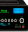

LIMAUDIO
Обзоры
Сравнения
Топы
Гайды и советы
8 (800) 770-04-73
Заказать звонок
Блог о домашних
кинотеатрах и Hi-End звуке
Обзоры, идеи и секреты идеального просмотра
Популярные темы
Смотреть все
Домашний кинотеатр
Напольная акустика
Полочная акустика
Встраиваемая акустика
Dolby.Atmos
Сабвуферы
AV Ресиверы
ЦАПы
Комплекты акустики
AV Процессоры

Предусилители
Усилители
Сетевые проигрыватели
Проигрыватели винила
Фонокорректоры
Проекторы и экраны
По дате
По популярности
Посмотреть ещё